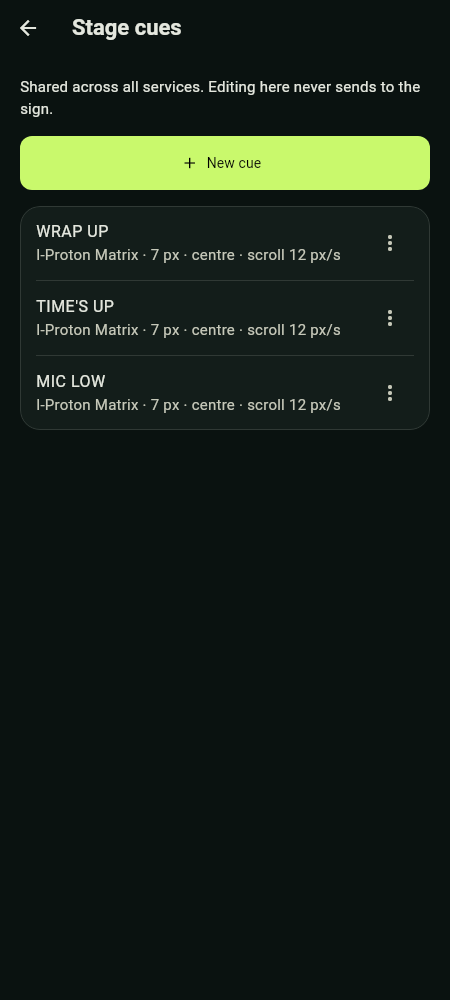
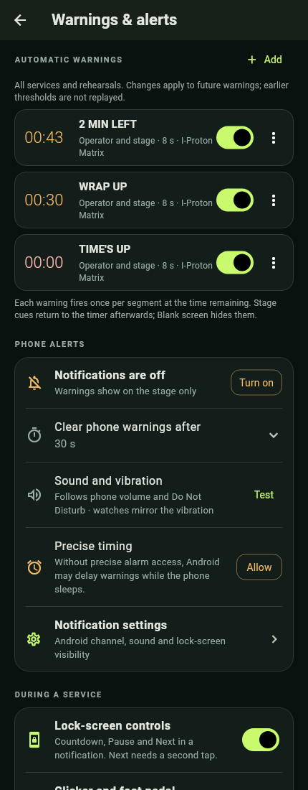

Prepared Stage cues are short reusable instructions such as WRAP UP or AMEN. Configure them before the service in Settings › Stage cues, or use the Manage cues link on Live.
- Create or edit a cue's text, font, height, bold/italic, alignment, effect and speed as available.
- Save it. The Live cue buttons share this saved set across services.
- During the service, tap the cue once to send. There is no editing step on Live; choose deliberately. Before a service starts, Stage cues says "Cues work once the service starts".
- Select Show timer when the instruction has served its purpose. The timer has continued beneath the cue.
Changing the saved cue later does not rewrite content already on stage. Deleting an individual cue or warning offers an eight-second Undo, preserving its formatting. This Undo does not apply to deleting reports.


For LED text, choose I-Proton Matrix, I-Proton Sq-Matrix, or bundled Tinos. Matrix countdown digits are unchanged. Tinos has regular, bold, italic and bold-italic faces; no font import is needed. Tall 14 px preserves more serif detail. Short 7 px fits a smaller line. Static/flashing text must fit the LED width; scroll longer text. Changing square/circular LED preview cells does not change the actual sign's physical LEDs or glyph data.
Automatic rules live in Settings › Warnings & alerts and apply to all services and rehearsals. They trigger at time remaining, not time elapsed. In a ten-minute segment, a 01:30 rule triggers when 8 min 30 s have elapsed under ordinary uninterrupted timing. Use suggested warnings adds a starting set.
For each rule set the Remaining time, the warning text and Where to show: Operator + phone notification or Operator and stage. Choose Show for 1–120 seconds, or Scroll once, then return for scrolling text wider than the display. A stage warning returns to the current countdown, or At zero, after its duration. On the LED path, that duration begins after the controller acknowledges it.


New manual cues, Blank, Next and End service supersede a warning. Passed thresholds are not replayed retroactively when rules change. If a manual Quick message covers every connected stage screen, automatic stage cues are consumed while it is present; phone warnings continue. With a targeted Quick message, other stage screens can still show warnings.
Under Phone alerts, Clear phone warnings after is separate: choose 15, 30, 60 seconds or Until dismissed, with 30 seconds as default. A segment change or service end clears obsolete warning notices. This does not shorten stage warning duration or remove the active-service notification. Phone warnings use a distinct vibration pattern, which Wear OS watches mirror.
Turn on Android notifications (Turn on) and Precise timing (Allow) where offered, then use Test on the Sound and vibration row. Volume, the notification channel and Do Not Disturb still affect sound. Background operation starts with the LED sign or sharing and keeps warnings running while locked; if Live says background operation is unavailable, keep the app open. Ready for service also shows whether Android battery optimisation could pause warnings with the screen off, with Allow to fix it. Force-stopping the app is not a supported way to silence a service.